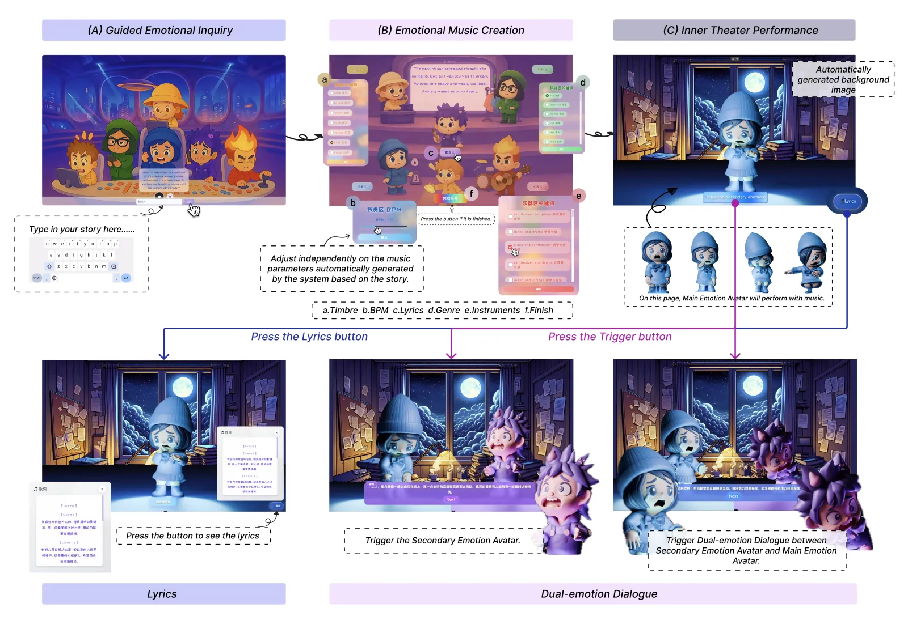
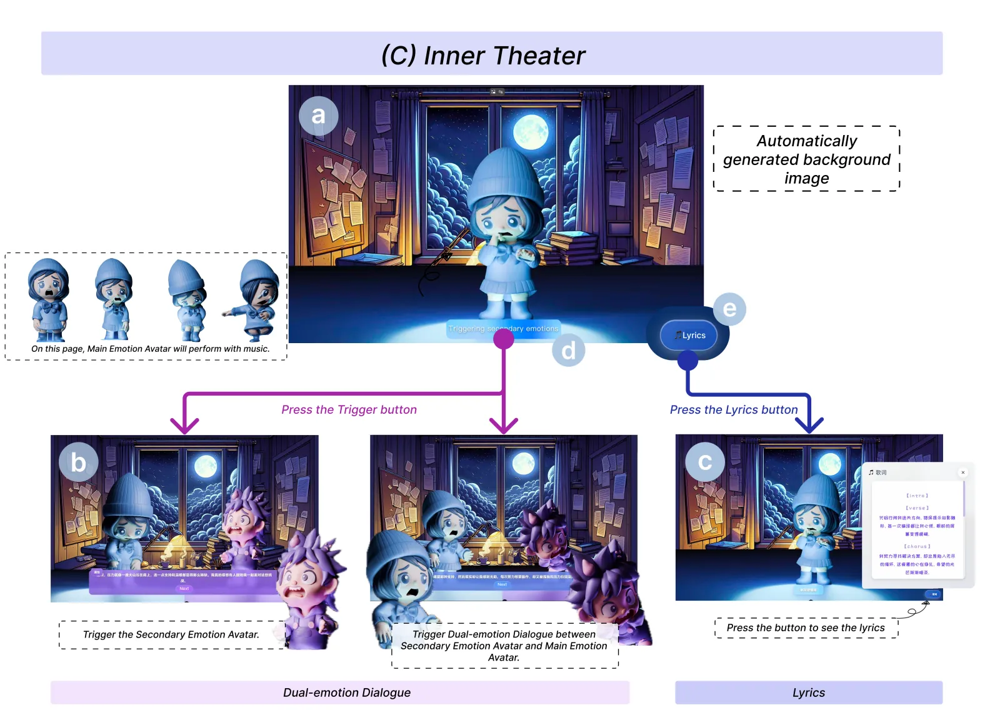
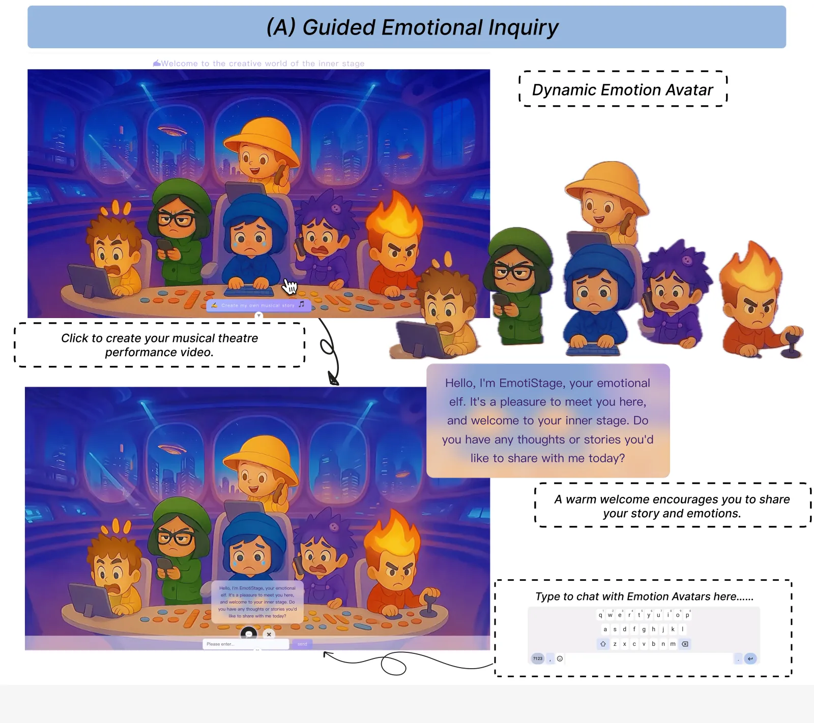
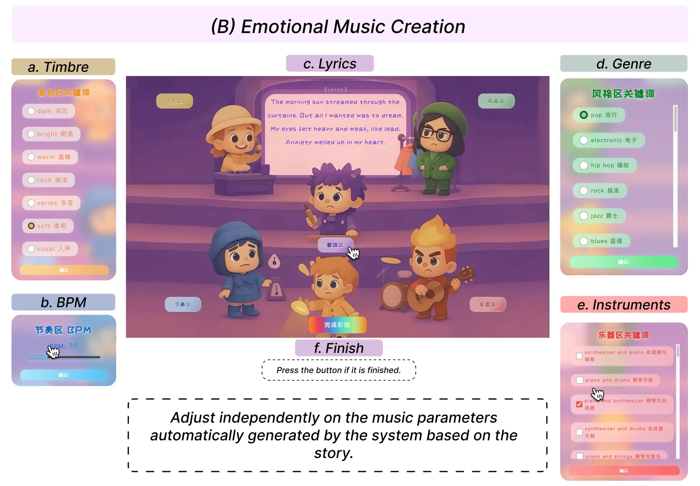

JUNICE LIN
Board
Back to portfolio
Project Illustration
Emotional performance system illustrations.

Complete Project Illustration board rendered from the original PDF.

InnerTheater

Guided Emotional Inquiry

Music Module